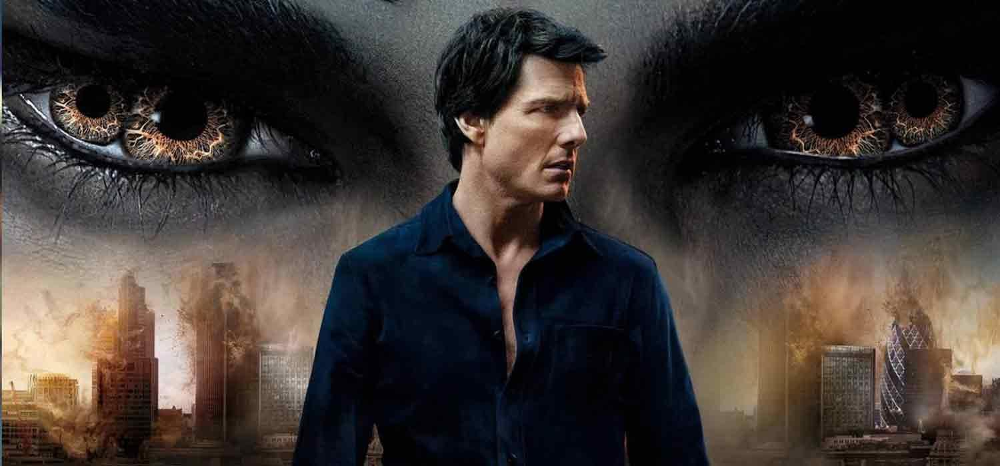
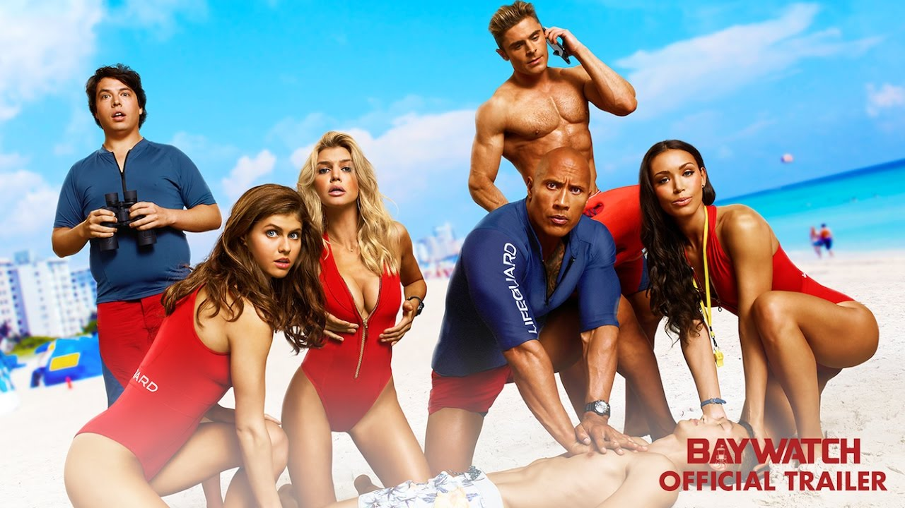
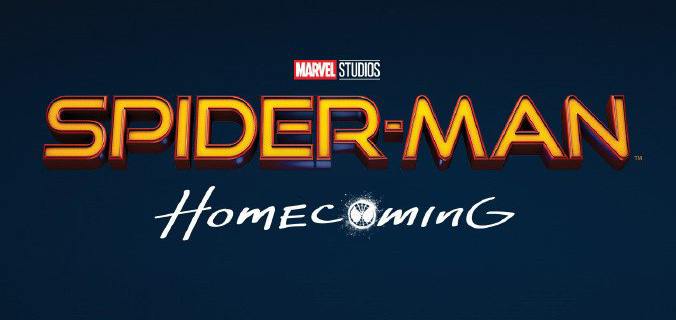

Cinemacentro


| Cartelera | ||
| Sala | Pelicula | Horario |
| 1 | The Mummy  | 2:30 pm |
| 2 | Wonder Woman |
7:25 pm |
| 3 | Cars 3 |
9:15 pm |
| 4 | Baywatch | 7:10 pm |
| 5 | Spider-Man  | |
Teo es el repartidor más rápido de un colmado de Santo domingo, y es el fanático número uno de un popular programa de supervivencia del país. Espera, junto a María, a su primer bebé.
Peter Parker (Tom Holland) es un adolescente que estudia en la escuela secundaria y que tiene que lidiar con los problemas típicos de un chico de su edad. Claro que, su vida no es del todo normal.